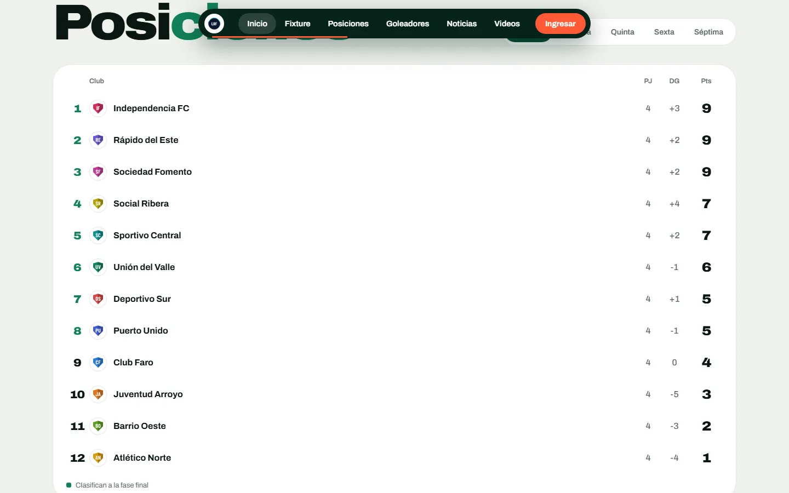

La tribuna digital de tu liga
El sitio de tu liga de fútbol: fixture, posiciones, goleadores, noticias y videos, con tu nombre, tu escudo y tus colores.
Hoy tu liga vive en chats, planillas y papeles. Con ElTablón vive en un solo lugar.
La tabla la tiene uno. El fixture, otro. Y los goles, la memoria de alguien. Se cargan los resultados una vez y el sitio se actualiza: fecha, tabla y goleadores.
¿Alguien sabe a qué hora juega la Sexta?
Fecha 4: Norte 2 - Sur ?
(confirmar con el árbitro)
Mandame la tabla por favor
¿Quién cargó los goles del sábado?

Elegí cómo se ve tu liga
Tres diseños listos y los colores de tu escudo. El resto del sistema es el mismo.
Color de marca
Son capturas de una liga de ejemplo. Los clubes y los datos son ficticios.
Abrir la demo completaTres maneras de usar tu liga
- Ve la fecha, la tabla y los goleadores de su categoría desde el celular.
- Consulta el fixture completo, con el resultado y los goles de cada partido.
- Mira el plantel de cada club, por categoría.
- Lee las noticias y ve los videos de la liga.
- Si crea su cuenta, recibe un mail cuando se completa una jornada.
- Su cuenta la crea el administrador y le llega el usuario y la clave por mail.
- Publica noticias con título, texto, categoría y foto.
- Carga videos de YouTube pegando el enlace.
- Tiene un panel con solo lo que necesita: no toca la administración de la liga.
- Carga clubes con su escudo, equipos por categoría y jugadores, de a uno o con una planilla de Excel.
- Arma el fixture a mano o con el sorteo automático, con vista previa.
- Registra goles, tarjetas y penales; la tabla se recalcula sola.
- Define los playoffs según la tabla, con ida y vuelta.
- Administra temporadas y torneos, y da de alta periodistas.
Una liga online es una liga que se mira más
Para el hincha
- Sabe cuándo juega su equipo sin preguntar en el grupo.
- Ve la tabla apenas se cargan los resultados.
- Sigue a su club y a su goleador desde el celular.
- Encuentra las noticias y los videos de la liga en un solo lugar.
Para quien organiza
- Carga los resultados una vez y se actualizan la tabla, los goleadores y las imágenes para redes.
- Recibe menos mensajes de «¿cómo quedó?».
- Tiene un sitio con el nombre, el escudo y los colores de la liga.
- Suma periodistas que publican sin tocar el resto del sistema.
Cada fecha, tres imágenes listas para publicar
Cuando se completa una jornada, el sistema arma la tabla de posiciones, los resultados y la próxima fecha, con el escudo y los colores de tu liga.
Las imágenes quedan guardadas en el panel. Las publica la liga en sus redes.
Cómo se arma tu sitio
- 1
Elegís el diseño y los colores
Mirás los diseños, elegís uno y lo vestimos con el nombre, el escudo y los colores de tu liga.
- 2
Adaptamos el sistema a tu torneo
Cada liga juega distinto: cantidad de clubes, categorías, fases y cruces. Lo ajustamos al formato del tuyo y cargamos tus datos.
- 3
Tu liga queda online
Tu equipo maneja todo desde el panel: clubes, fixture, resultados, noticias y videos.
ElTablón nació dentro de una liga regional de verdad. Se armó resolviendo lo que un torneo necesita: fixture, tabla, goleadores, playoffs con ida y vuelta y categorías juveniles.
No hay un precio único, porque cada liga es distinta
El presupuesto depende de tres cosas. Contanos cómo es tu liga y te respondemos.
Pedí tu presupuesto- El formato de tu torneoCantidad de clubes, fases y cruces.
- Las categoríasMayores, inferiores y las que tenga tu liga.
- El diseño y los coloresEl que elijas, con la marca de tu liga.
Preguntas frecuentes
¿Necesito saber de tecnología?
No. El panel es una serie de formularios: cargás los resultados y el resto se actualiza solo.
Mi liga juega con un formato distinto. ¿Se puede adaptar?
Sí. Cada liga tiene su formato y lo adaptamos: cantidad de clubes, fases, cruces de playoffs y categorías.
¿Puedo usar el nombre, el escudo y los colores de mi liga?
Sí. Elegís uno de los diseños y lo vestimos con tu marca.
¿Qué pasa con los datos de mi liga?
Cada liga tiene su propio sitio y su propia base de datos, separada de la de las demás.
¿Se publica solo en Instagram?
No. El sistema prepara las imágenes de cada fecha y quedan guardadas en el panel; la liga las publica en sus redes.
¿Puedo probarlo antes?
Sí. La demo tiene datos ficticios y podés entrar con el panel de administrador para ver cómo se carga todo.
Armemos el sitio de tu liga.
Escribinos y te mostramos cómo quedaría con el escudo y los colores de tu liga.